El disco protoplanetario en acción: clases YSO, surcos y protoplanetas
Cierre de la formación del disco protoplanetario: la anatomía en capas de los discos circunestelares, las clases de objetos estelares jóvenes según su SED, los dos caminos para fabricar un Júpiter, los surcos que abren los planetas gigantes (HL Tau) y la caza —casi siempre frustrada— de protoplanetas reales.
Las estrellas crecen a través de discos de acreción circunestelares, y esos mismos discos son el único lugar del universo donde se pueden formar planetas. Esta clase termina el capítulo de la formación del disco protoplanetario mirándolo por dentro: qué estructura vertical tiene, qué ve cada telescopio en cada capa, cómo se clasifica la juventud de una estrella por la forma de su espectro (las clases 0, I, II y III), y las dos teorías rivales para formar un gigante gaseoso. El clímax es observacional: los surcos que los planetas gigantes abren en los discos —la predicción de los años 80 que motivó la construcción de ALMA— y los poquísimos protoplanetas que hemos logrado pillar con las manos en la masa.
El vivero: discos circunestelares observados
Regiones de formación estelar llenas de discos, y un mismo disco visto con tres ojos distintos.
Punto de partida (repaso del final de la clase anterior): las estrellas jóvenes no tragan material directamente — la conservación del momentum angular lo impide. El material cae primero a un disco de acreción circunestelar que regula el crecimiento de la protoestrella, y los vientos y flujos bipolares ayudan a evacuar momentum angular. El profesor mostró una galería de estrellas jóvenes naciendo en un gran cúmulo: una estructura tipo «medusa» que es un flujo bipolar visto con cierta orientación, otro flujo bipolar, una región ionizada creada por la estrella más caliente, y en la interfaz una región de fotodisociación (PDR), donde el hidrógeno molecular se disocia en hidrógeno atómico.
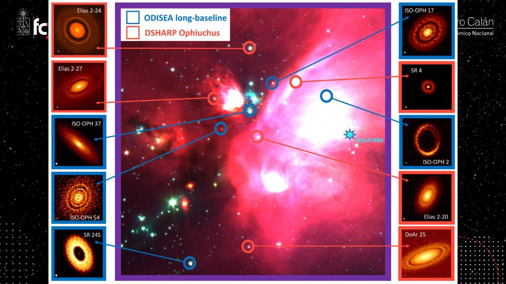
En el continuo (sub)milimétrico observamos granos de tamaño comparable a la longitud de onda: a λ ≈ 1 mm vemos «roquitas» de ~1 mm; si observáramos a 1 cm veríamos rocas de ~1 cm. Y a 1 μm en el infrarrojo (luz reflejada) vemos granitos de ~1 μm. Cada longitud de onda es un filtro pasa-banda en tamaño de partícula.
IM Lupi: el mismo disco, tres imágenes distintas
IM Lupi es una estrella de masa parecida al Sol, temprana en su evolución: una clase II (ya sin envoltura, solo el disco). La clase la comparó en tres técnicas:
- Luz reflejada (scattered light), VLT/SPHERE, ~1 μm: luz de la estrella dispersada por granos de ~1 μm en la superficie del disco. El disco se ve «gordito», verticalmente grueso, como una dona o doble embudo, con una zanja oscura que es la sombra del plano medio denso separando cara superior e inferior. Es luz polarizada: la estrella, cuya luz directa no está polarizada, desaparece de la imagen.
- Continuo ALMA, banda 6 (~230 GHz, ~1 mm): granos de ~1 mm, mil veces más grandes. El disco se ve delgadito, sin indicio de grosor — el primer indicio de la sedimentación del polvo grande hacia el plano medio.
- Línea de CO (intensidad de pico), ALMA: para cada línea de visión se registra el máximo de la línea espectral. El gas también se ve grueso. Ojo: los «artefactos radiales» de la imagen no son estructura real del disco, sino un efecto del ancho del canal espectral (Δν) sobre el que se promedia la radiación.
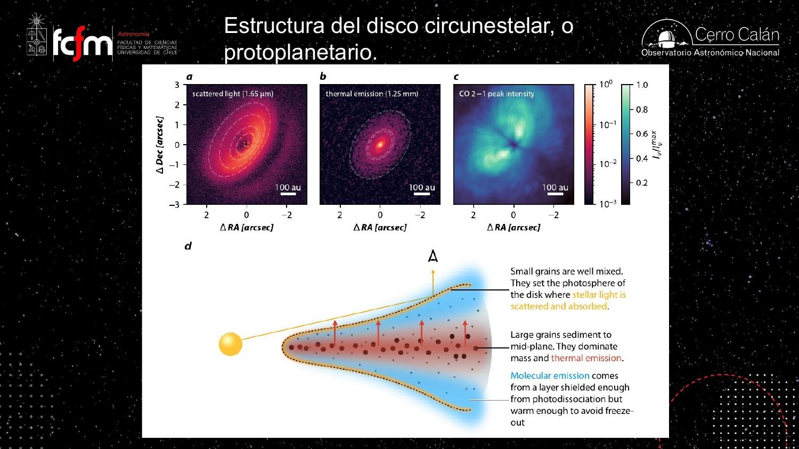
La intuición geométrica del profesor: en luz óptica/infrarroja iluminamos la superficie del disco como quien ilumina la entrada de una caverna sin ver el interior de la montaña; en cambio el continuo ALMA atraviesa y muestra el plano medio, donde viven los granos grandes.
Los «rayos» radiales del mapa de CO son un artefacto de discretización: la señal continua (la línea espectral) se muestrea en canales de ancho Δν y se toma el máximo por canal — el mismo tipo de artefacto que el aliasing o el banding al cuantizar una señal. Moraleja de ingeniería: antes de interpretar estructura en una imagen, pregúntate qué parte es del objeto y qué parte es del pipeline de adquisición.
Estructura vertical: gravedad vs presión
Por qué el disco no se aplasta en un plano infinitamente delgado.
Consideremos un pedacito de gas a distancia de la estrella y altura sobre el plano medio. La atracción gravitacional de la estrella se descompone en una parte radial y una vertical :
- La componente radial se compensa con la aceleración centrífuga de la órbita: el gas no cae hacia la estrella.
- La componente vertical no tiene con qué compensarse orbitalmente: tiende a llevar todo al plano medio. Lo que la frena es el gradiente de presión del gas.
Si la temperatura es constante con la altura, presión y densidad quedan directamente relacionadas y la ecuación se resuelve fácil. La solución es una gaussiana — una campana de distribución normal:
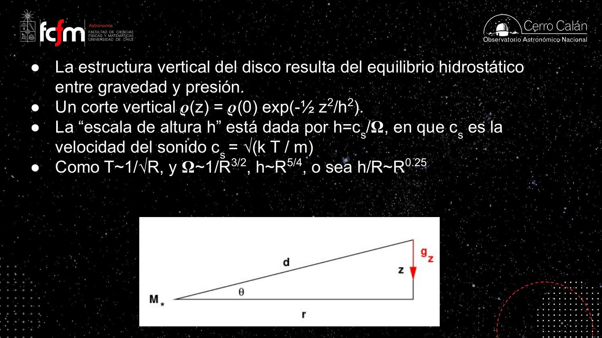
El perfil vertical del disco es formalmente idéntico a una atmósfera isoterma en un potencial armónico: la «rigidez» del pozo la fija Ω² y la «agitación» la fija T. Si has visto la distribución de Boltzmann e−E/kT, esto es exactamente eso con E = ½ m Ω² z². Sistemas distintos, mismo patrón matemático — como reconocer que dos problemas se resuelven con la misma estructura de datos.
Temperatura del disco y forma acampanada
El equilibrio radiativo fija T(r), y con ello el grosor relativo del disco.
¿De qué depende la temperatura a cada radio? En el disco (como en el sistema solar) los cuerpos están en equilibrio radiativo con la estrella: todo lo que reciben es igual a todo lo que emiten. Para un cuerpo de radio a distancia , que absorbe como una «pastillita» de sección π a² y emite como cuerpo negro por toda su superficie:
Ahora combinamos las tres dependencias radiales para obtener el resultado estrella de la sección:
Predicción geométrica: los discos protoplanetarios no son triángulos de lados rectos ni una «humita» plana — son acampanados (flared en inglés): su grosor relativo aumenta hacia afuera. Y mientras más caliente el disco, más «gordito». Esto es exactamente lo que muestran las imágenes de luz reflejada como la de IM Lupi: una superficie que se va abriendo con el radio.
Esta parte fue derivada en pizarra, con la cámara desenfocada apuntando al lado equivocado y un plumón que no se veía — el profesor terminó dibujando la gaussiana ρ(z) y la escala de altura del lado que la cámara sí registraba. El mensaje que pidió retener: (1) el corte vertical de densidad es una gaussiana de ancho h, (2) h crece con la temperatura, y (3) h/r aumenta con el radio: el disco es acampanado.
Anatomía por capas y la vida de un grano de polvo
Cada instrumento ve una capa; cada grano vive una vida agitada.
El disco es un sándwich, y las técnicas observacionales se reparten las capas:
- Superficie: luz reflejada (scattered light) sobre granos de ~μm — cámaras infrarrojas como SPHERE, y el infrarrojo medio con el telescopio Webb (cámara MIRI).
- Capa intermedia: gas caliente a 300–1000 K que emite en el infrarrojo por su propio calor (no por reflexión), y la emisión molecular (líneas como CO).
- Plano medio: los granos grandes (~mm) sedimentados, visibles con ALMA en el continuo.
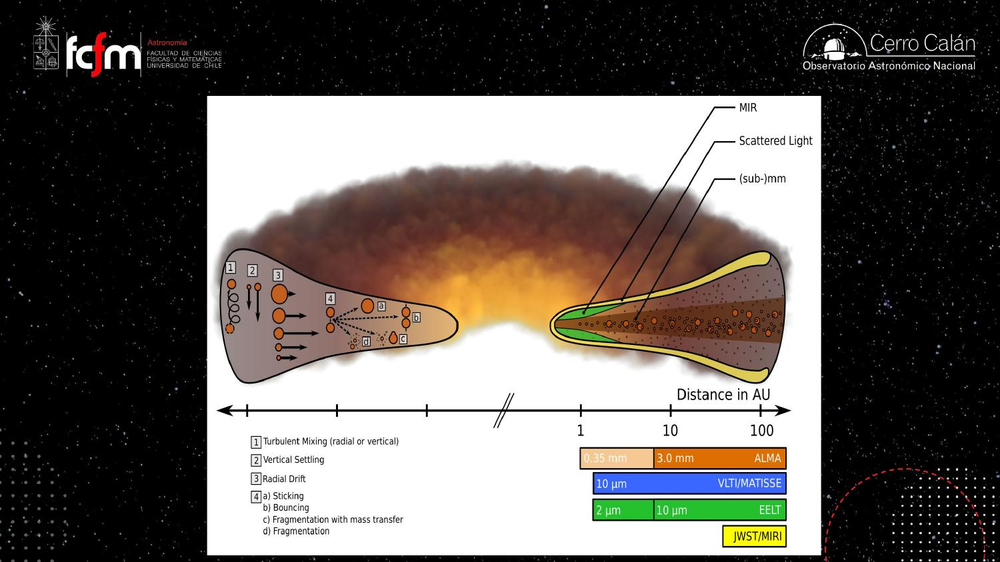
Los cuatro destinos de un granito de polvo
- Ser levantado: la turbulencia del gas arrastra granos pequeños a gran altura.
- Sedimentar: bajo la gravedad vertical de la estrella, los granos caen hacia el plano medio.
- Derivar hacia adentro: los granos de tamaño intermedio (ni muy grandes ni muy chicos) sienten el roce del gas, que los frena; al perder momentum angular, caen en espiral hacia la estrella.
- Chocar: los movimientos relativos producen colisiones que pueden terminar en crecimiento (se pegan), rebote (no pasa nada), fragmentación (se pulverizan) o acreción parcial.
La deriva radial del punto 3 es un problema teórico serio: las rocas «adecuadas» caen sobre la estrella rapidísimo. La solución —máximos de presión que atrapan el polvo, las trampas de polvo— es el tema de la clase siguiente (segunda parte de esta misma sesión doble).
Clases de objetos estelares jóvenes: la SED como firma
Clase 0, I, II y III — cuatro etapas del nacimiento estelar, leídas en el espectro.
Para ordenar el nacimiento estelar —un fenómeno continuo y complejo— la astronomía inventó cuatro clases de objetos estelares jóvenes (YSOs, Young Stellar Objects), que se distinguen por la forma de su distribución espectral de energía (SED): cuánta energía emite el objeto en función de la frecuencia. El profesor insistió en que hay que saber leerlas:
- Clase 0: el grueso de la masa aún está en la envoltura gaseosa que cae. Un corazón molecular de masa comparable a la de la estrella colapsa en caída libre; el colapso se frena cuando la protoestrella (de ~1 UA de tamaño, ionizada) se forma. Mientras nace la protoestrella, nace también el disco. La SED es la de un cuerpo frío: solo un bulto en el infrarrojo lejano/submilimétrico.
- Clase I: al revés: el grueso de la masa ya está en la estrella; ya hay un disco («platillo»), pero queda un resto de envoltura. Fuerte exceso infrarrojo.
- Clase II: se disipó la envoltura: queda el puro disco alrededor de la estrella. La SED muestra la fotósfera estelar más el exceso infrarrojo del disco.
- Clase III: se acabó también el gas del disco: quedan las puras rocas (disco de escombros o debris). SED casi puramente estelar.

«En astronomía inventamos clases para poder orientarnos en un fenómeno complicado. Para poder tener un poquito de orden en este caos inventamos las clases. No es que estén escritas en mármol en la naturaleza.» De hecho, más adelante mostró que AB Aurigae está clasificada como clase II pero tiene tanto material cayendo que se parece más a una clase I: las fronteras son difusas.
Clasificar YSOs por su SED es clasificación por firma espectral: el «feature» discriminante es la pendiente de la SED en el infrarrojo (αIR = d log νFν/d log λ): pendiente positiva → clase I; plana/negativa con exceso → clase II; sin exceso → clase III. Es el mismo patrón que clasificar señales por su contenido espectral (huellas de audio, análisis de vibraciones): no necesitas «ver» el objeto, basta la forma de su espectro de potencia.
Camino 1: aglomeración de núcleo (core accretion)
Quince órdenes de magnitud en tamaño: del grano de polvo al gigante gaseoso.
¿Cómo formar un Júpiter dentro de ese material rico en polvo? Los planetas gigantes importan especialmente: son «los mandamases» que controlan la arquitectura de los sistemas planetarios, y son los únicos que tenemos posibilidad de observar en formación. Hay dos ideas rivales. La primera y más popular es la aglomeración de núcleo (core accretion), una escalera de ~15 órdenes de magnitud en tamaño:
- Granos de polvo (0.1–1 μm) — los mismos que reflejan la luz estelar en la superficie del disco — chocan de a pares y crecen…
- …hasta guijarros (pebbles) de mm–cm: 3–4 órdenes de magnitud.
- De alguna manera esos guijarros se transforman en planetesimales de ~1 a 100 km (10³–10⁵ m): otro salto de 5–6 órdenes.
- Los planetesimales chocan entre sí y forman un núcleo planetario («corazón telúrico») de ~1.000–6.000 km, como la Tierra.
- Si ese núcleo supera ~10 masas terrestres, es capaz de retener hidrógeno: acumula una envoltura gaseosa que forma el grueso del gigante gaseoso — Júpiter es básicamente hidrógeno y helio, como el Sol.
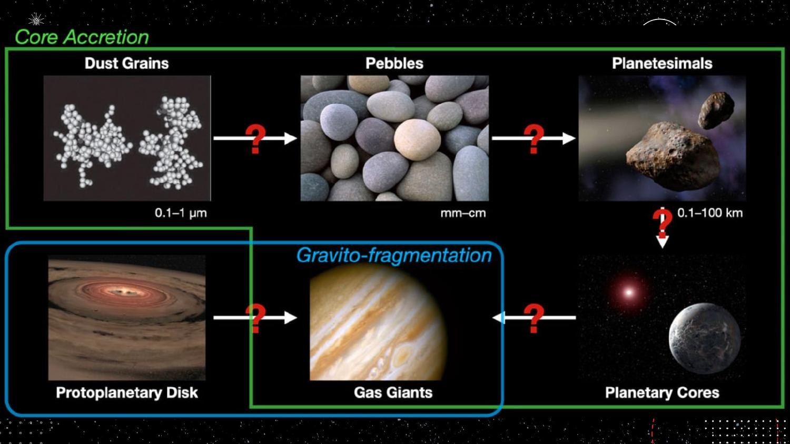
Los dos problemas del camino 1
- La barrera del centímetro: los cálculos predicen una barrera de crecimiento en torno al cm (depende de dónde en el disco): los choques fuertes fragmentan los granos, y la deriva radial los hace caer sobre la estrella antes de crecer más. No sabemos bien cómo se cruza. En ese primer tramo la gravedad no juega ningún papel — son encuentros fortuitos de trayectorias desordenadas. Para el salto a planetesimales hay una teoría reciente que sí invoca gravedad (la inestabilidad de corriente, próxima clase), y para crecer de planetesimal a núcleo ayuda el enfocamiento gravitacional.
- El problema del tiempo: los cálculos clásicos necesitan ~20 millones de años para armar el núcleo… pero el disco vive ~2 millones de años. No cuadra. Es una teoría en desarrollo.
El guion que explica los tres tipos de planeta
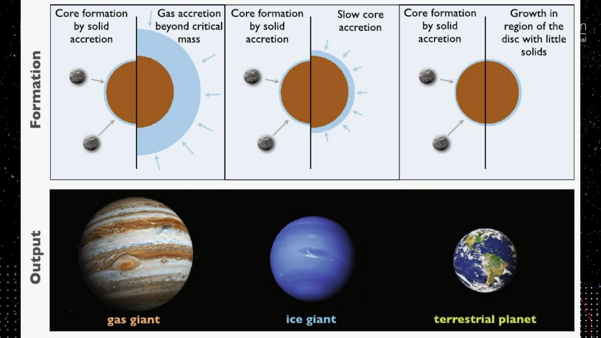
Piensa en la barrera del centímetro como un problema de tasa de fallos vs tasa de éxito en un proceso estocástico: cada colisión es un «commit» que puede agregar masa (merge), no hacer nada (no-op) o destruir el objeto (rollback catastrófico). Si la probabilidad de fragmentación supera a la de adherencia justo en cierto rango de tamaños, la población se estanca ahí — un cuello de botella en el pipeline de crecimiento, agravado por un «timeout» global: la vida del disco.
Camino 2: gravito-fragmentación del disco
¿Y si Júpiter fuera una estrella fallida?
La idea alternativa: si el disco circunestelar es suficientemente masivo, un pedazo de él puede caerse bajo su propio peso — igual que la nube molecular colapsó para formar la estrella, pero dentro del disco. El gigante gaseoso se formaría casi igual que una estrella, solo que orbitando otra estrella: una estrella fallida. De hecho, si el colapso junta más de ~80 masas de Júpiter tenemos una estrella; entre 13 y 80 MJup, una enana café. No sabemos si Júpiter es un planeta gigante o una estrella fallida.
La misión Juno (recién concluida) midió con gran precisión el campo gravitacional de Júpiter para reconstruir su perfil de masa y ver si tiene un corazón rocoso en el centro. Según lo dicho en clase, los límites obtenidos favorecen la fragmentación gravitacional (es decir, no un núcleo rocoso compacto como el que predice el core accretion clásico). Nota al margen (inferencia propia): este punto es debatido en la literatura — Juno encontró indicios de un núcleo «diluido», cuya interpretación sigue abierta.
Los dos problemas del camino 2
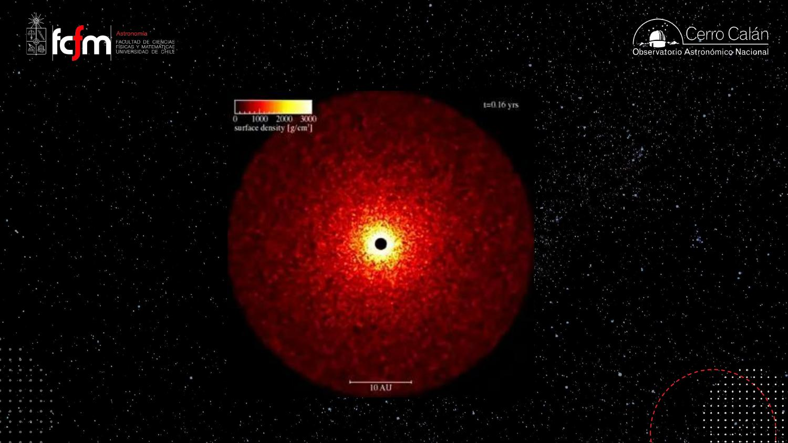
- Problema 1 — dónde: las condensaciones aparecen a 20–30 UA. Júpiter está a 5 UA, y las regiones internas de la simulación son estables: ahí no se formaría nada. No explica el sistema solar.
- Problema 2 — cuántos: cuando el disco se fragmenta, se fragmenta en mil pedazos: queda lleno de condensaciones y de espirales enrolladas. Nada que ver con un sistema de un solo Júpiter.
Las dos observaciones que podrían avalarla
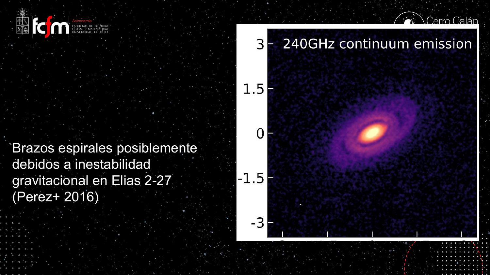
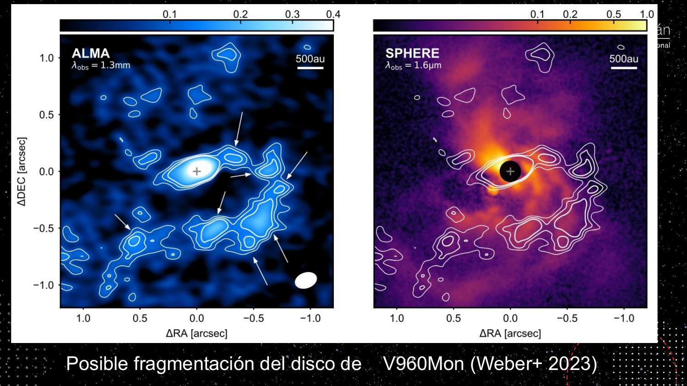
«Hay gente que dedica la vida a una teoría y gente que dedica la vida a la otra. Yo no soy teórico, me da lo mismo: soy agnóstico — creo lo que me dice la naturaleza.» Las dos observaciones anteriores son, por ahora, todo el respaldo observacional de la gravito-fragmentación.
Un Júpiter en el disco: el surco
No sabemos formarlo — pero pongamos uno y veamos qué hace.
Cambio de estrategia: supongamos que el planeta ya nació y estudiemos numéricamente su interacción con el disco. Este planteamiento es una predicción fuerte: es una solución de las ecuaciones de Newton (hidrodinámica + gravitación), independiente de cómo se formó el planeta. El resultado, para un planeta de 1 MJup:
- El planeta despeja una cavidad anular: el surco o gap.
- Queda conectado al resto del disco por brazos espirales pequeños (uno interno, uno externo) — muy distintos de las espirales múltiples de la gravito-fragmentación.
- En la propia órbita aparecen dos máximos de densidad: los puntos de Lagrange, donde se acumularían los troyanos (como los asteroides troyanos de Júpiter).
- Alrededor del planeta se forma un disco circunplanetario — un platillito donde pensamos que se forman las lunas de los gigantes.
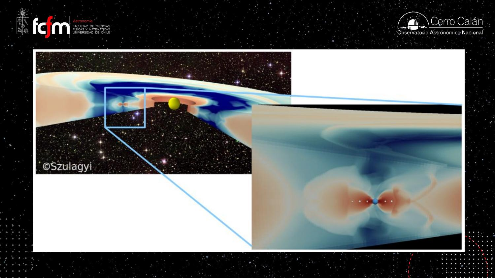
La predicción del surco viene de los años 80, cuando la formación planetaria era un tema teórico de nicho: sin observaciones posibles, «cuando un tema de la física no se puede corroborar experimentalmente, deja de ser interesante». La motivación científica original del interferómetro milimétrico que después se llamó ALMA fue precisamente poder tomar imágenes de discos y confirmar estos surcos (aunque ALMA sirva hoy también para cosmología, galaxias y mucho más).
Los «ingredientes» de estas simulaciones son mínimos: la segunda ley de Newton aplicada a un fluido (eso es la hidrodinámica), la gravitación de la estrella y el planeta, y el acoplamiento aerodinámico polvo-gas (fuerza de roce). El campo magnético importaría más en las regiones internas del disco; más afuera basta la aproximación hidrodinámica. Es un ejemplo de libro de modelamiento por simulación: pocas ecuaciones, integradas numéricamente, generan predicciones morfológicas ricas y falsables.
HL Tau y los sondeos ALMA
La imagen que cambió el campo — y la sorpresa de los que no muestran nada.
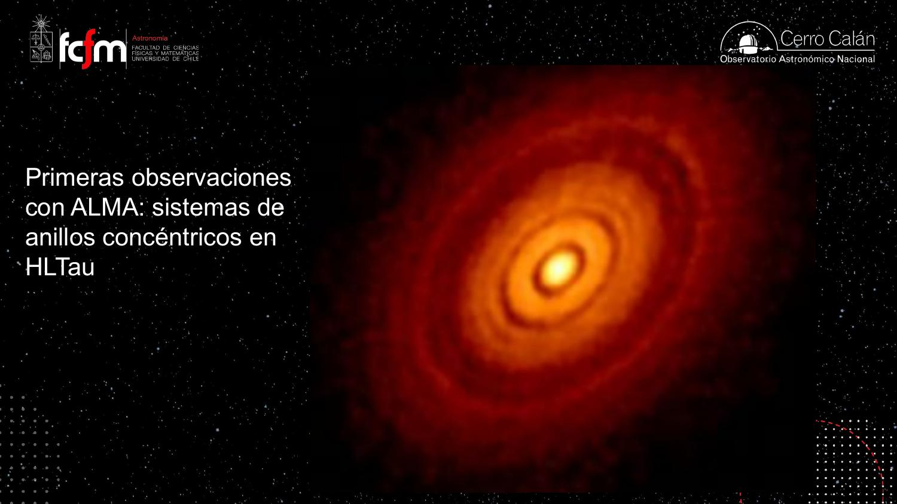
Lo impactante es que HL Tau es una clase I — relativamente joven en el esquema del nacimiento estelar. Si cada surco lo abre un planeta, la formación planetaria tiene que ser rápida: del orden de 500 mil años, no los ~20 millones de años del core accretion clásico. Y visualmente, este sistema ordenado y «tranquilito» en nada se parece al caos de espirales y condensaciones de la fragmentación gravitacional.
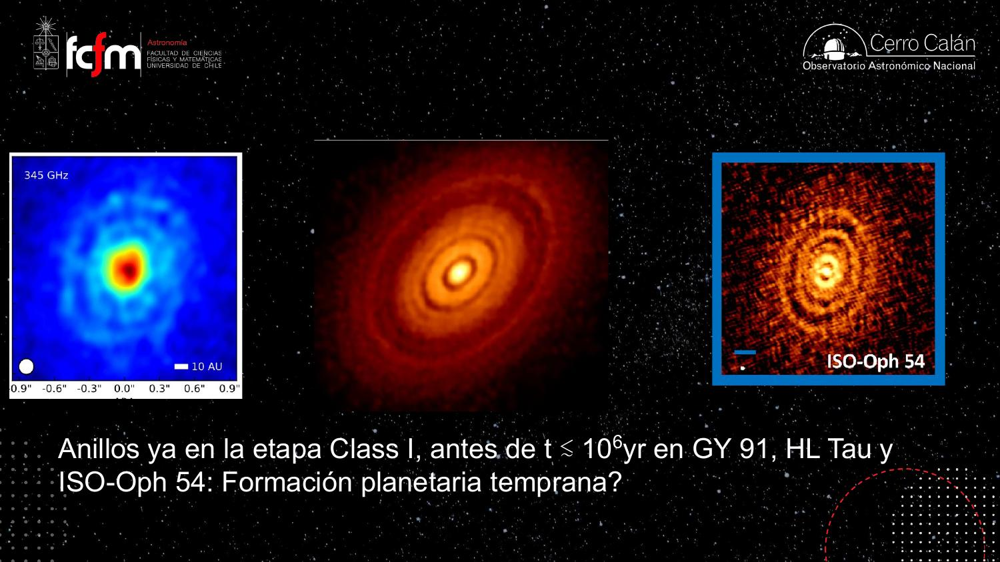
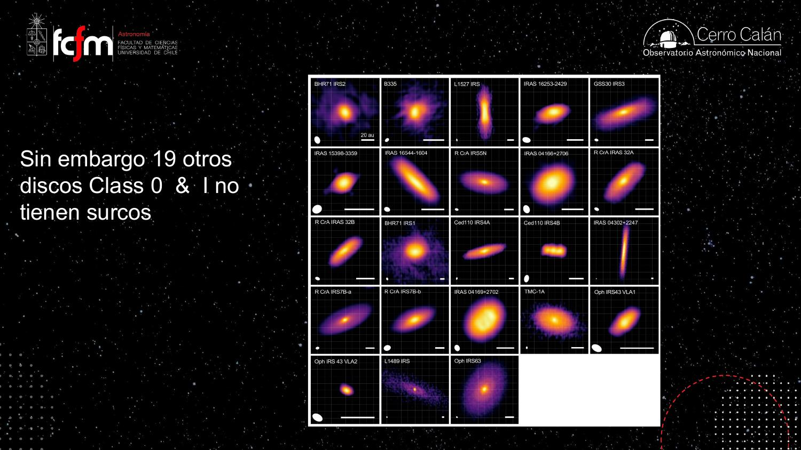
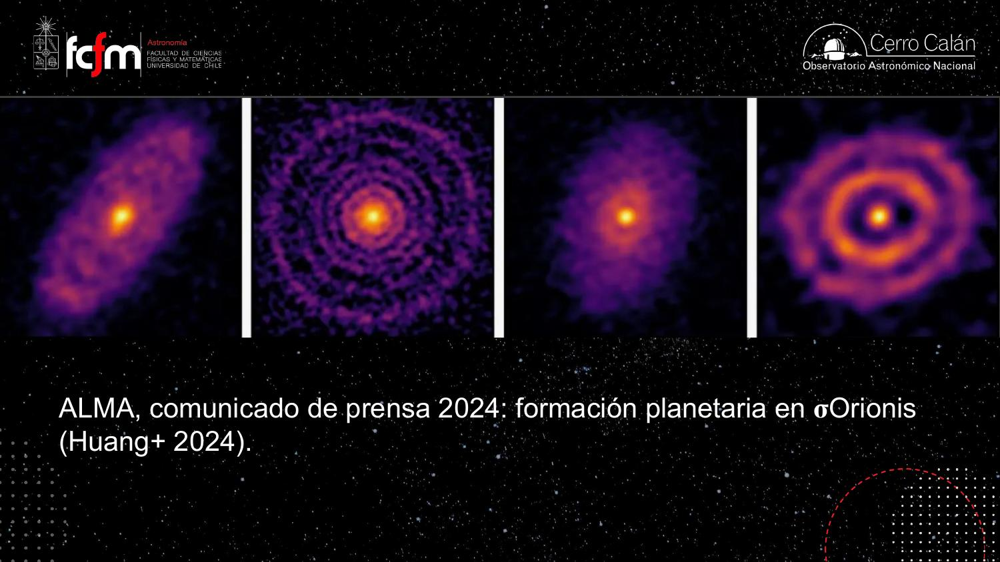
El sondeo de los 19 discos es una lección de sesgo de selección: los tres primeros casos (HL Tau, GY 91, ISO-Oph 54) eran los llamativos, los que motivaron la hipótesis — el equivalente a diseñar un sistema mirando solo los logs de los incidentes espectaculares. Solo el sondeo sistemático (la «muestra completa») reveló que eran la excepción, no la regla.
Del ancho del surco a la masa del planeta
El radio de Hill como regla de medir — y el problema de los sesgos observacionales.
Si cada surco lo esculpe un planeta, el ancho del surco debería decirnos su masa: a planeta más masivo, surco más ancho. Giuseppe Lodato (Milán) llevó la idea al extremo: recogió los anchos Δ de todos los surcos observados y los comparó con la estimación teórica:
Con esa formulita, cada surco se convierte en un planeta de masa estimada, y esos planetas se pueden poner en el diagrama masa planetaria vs radio orbital — el mismo del módulo 2 sobre sistemas planetarios, poblado con los miles de exoplanetas de la base de datos exoplanet.eu (masas y radios de velocidad radial y tránsitos):
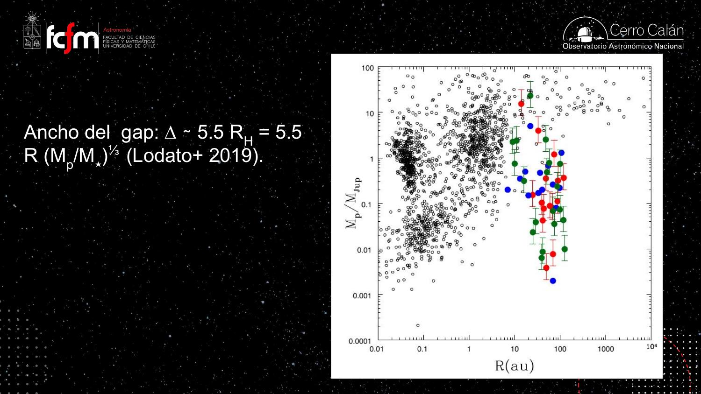
El diagrama lleva la huella de los sesgos
- Tránsitos y velocidad radial son más sensibles a planetas cercanos a su estrella (perturbación gravitacional más fuerte, tránsitos más frecuentes). Que no veamos nada a grandes radios orbitales no significa que no haya.
- Los exoplanetas se detectan en estrellas vecinas (a unos pocos parsec); los discos se observan en regiones de formación estelar, las más cercanas en el cinturón de Gould, a ~100 pc. A esa distancia, incluso ALMA tiene dificultad para resolver las regiones internas de 1–10 UA — otro sesgo, ahora contra los surcos internos.
- ¿Es raro el sistema solar, con su Júpiter a 5 UA, frente al grumo de gigantes pegados a su estrella? Al corregir por sesgos, la conclusión es que el sistema solar sí es un sistema planetario típico. Pero queda la pregunta: ¿cómo llegaron esos gigantes tan cerca? Respuesta adelantada: migración — los planetas no se quedan donde nacen (tema de la próxima clase).
Este es un caso clásico de censored data: cada técnica de detección define una región de sensibilidad en el espacio de parámetros, y el dataset resultante confunde «no hay» con «no puedo ver». Antes de concluir del diagrama masa–radio orbital, hay que modelar la función de selección — como corregir métricas de un sistema cuyos sensores solo reportan sobre cierto umbral.
Cazando protoplanetas: TW Hya, AB Aur y PDS 70
Treinta o cuarenta anuncios; tres o cuatro sobrevivientes.
Los surcos son indicios indirectos. ¿Dónde están los protoplanetas mismos? Los observadores sueñan con detectarlos, y la historia está llena de descubrimientos anunciados que después no eran: de unos 30–40 anuncios «a lo grande», han sobrevivido tres o cuatro con suerte. Estos son los casos que sí tienen algún sustento:
TW Hya: la envoltura hidrostática de una súper-tierra
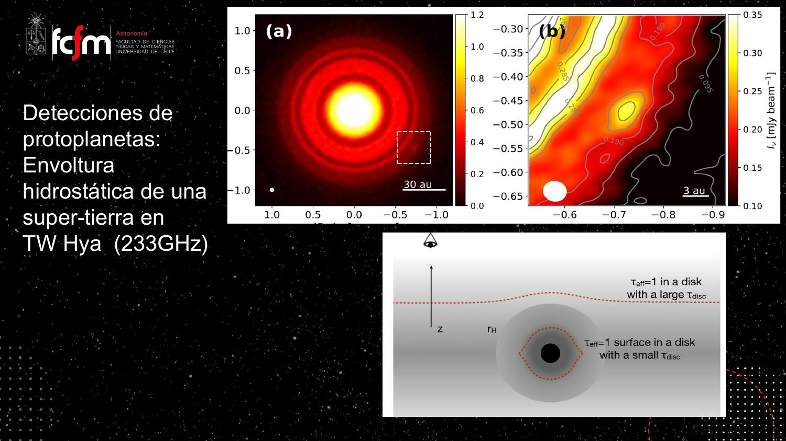
- TW Hya es el disco protoplanetario más cercano (~50 pc), visto casi de cara. Es un bicho raro: con ~20–30 millones de años, ya debería haber perdido su disco, pero este sobrevivió; la estrella emigró de su región de formación y vive en una asociación suelta.
- La observación (~2017, grupo japonés) reveló un grumo; la interpretación llegó años después, de otro grupo (el teórico que la propuso —de origen chino, radicado en EE.UU.— integró el comité de tesis de la estudiante del profesor ese mismo día): el grumo es la envoltura hidrostática de una súper-tierra de ~10 masas terrestres.
- El núcleo es suficientemente masivo para acumular hidrógeno, pero la envoltura aún no colapsa: está en equilibrio, extendida hasta un tamaño comparable al radio de Hill (~1 UA) — por eso alcanza a resolverse. En opinión del profesor, este es el protoplaneta más espectacular: un planeta atrapado creciendo.
- La etapa siguiente: cuando la envoltura supere ~1 masa de Júpiter, se cae con todo hacia adentro (runaway core accretion), en solo cientos a mil años, liberando su energía gravitacional. Por eso los planetas recién formados son muy calientes (la «entropía inicial»): es lo que permite detectarlos en luz directa cuando jóvenes. El presupuesto de masa lo fija la metalicidad cósmica (~1% en masa de elementos más pesados que el helio): el corazón telúrico es una cosita de 2–3 tamaños terrestres; el resto, puro gas.
Estas proezas dependen de la síntesis de imágenes (o síntesis de apertura), la especialidad del profesor: el teorema de van Cittert–Zernike permite, correlacionando (multiplicando) los campos eléctricos medidos por cada par de antenas, reconstruir una imagen. Las ~40–60 antenas de ALMA operan de a pares y actúan como un solo gran telescopio. «Es medio mágico; una vez que uno comprende la matemática, no es tan mágico.»
AB Aurigae: candidatos por montones
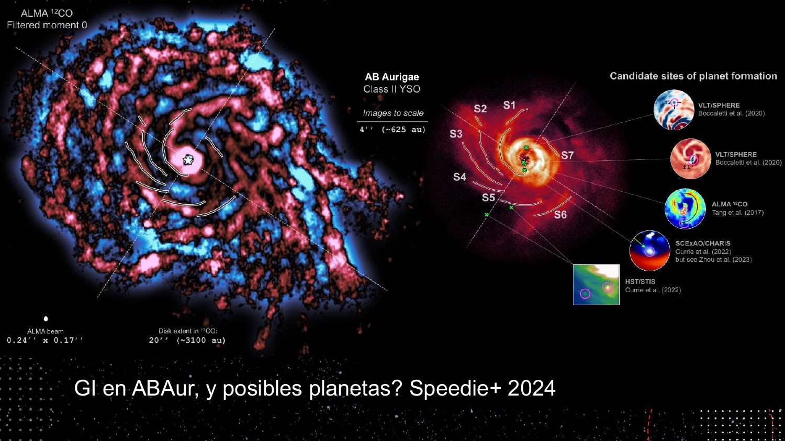
AB Aur ilustra la sed de protoplanetas: cada sobredensidad se publica como candidato («aquí tengo otro grumito → publiquemos un paper»). De todos los puntos verdes, solo uno ha sostenido la ruta como candidato. Hay claramente estructura compleja y lugares calientes, pero nada con la estructura regular y el tamaño adecuado del caso TW Hya — y son imágenes ópticas/IR, muy limitadas en estas regiones.
PDS 70: dos protoplanetas ya nacidos — y su firma radio
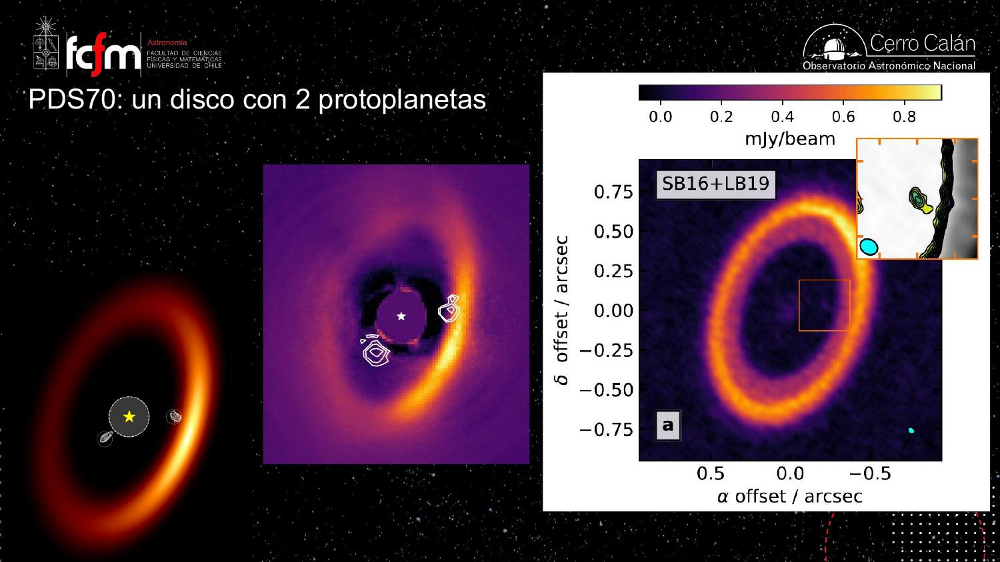
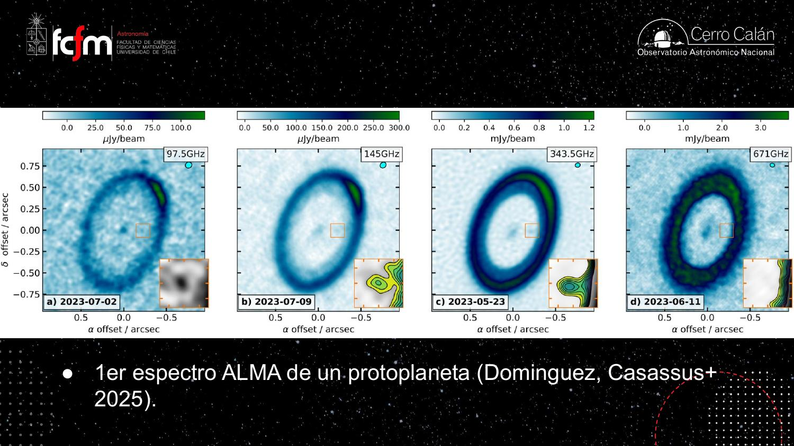
- La interpretación: el planeta (~10 MJup, casi enana café) tiene su disco circunplanetario, que actúa como colector de masa. Material del disco circunestelar cae sobre ese platillo y el impacto produce un choque en su superficie: una región de hidrógeno ionizado (región H II) que es lo que brilla en ondas radio. Sobre el planeta mismo habría acreción magnetosférica, como en una estrella.
- Que la señal desaparezca a alta frecuencia descarta que sea polvo (el polvo brilla más a frecuencias altas): es la firma del gas ionizado del choque de acreción.
Con un colaborador teórico (Chrenko, Casassus+ 2025), el profesor mostró que las simulaciones «bonitas» tipo Masset son engañosamente brillantes: una simulación con observación realista del continuo radio del polvo alrededor de un protoplaneta de 2 MJup requeriría ~80 días de observación con ALMA para detectarlo. Los protoplanetas existen, pero están en el límite de lo instrumentalmente posible.
Explorar conceptos
Tres widgets para jugar con las ideas de la clase.
Conceptos clave
Tabla de repaso rápido.
| Concepto | Qué es / valor | Por qué importa |
|---|---|---|
| Disco circunestelar | Disco de acreción que regula el crecimiento protoestelar | Único lugar donde se forman planetas |
| Regla del grano | A longitud de onda λ se ven granos de tamaño ~λ | 1 μm (IR reflejado) vs ~1 mm (continuo ALMA) |
| Estructura vertical | ρ(z) = ρ₀ e−z²/2h², gaussiana (gz vs dP/dz) | El disco es grueso en gas/granos chicos, delgado en granos mm (sedimentación) |
| Escala de altura | h = cs/Ω; cs = √(kT/m), Ω kepleriana | Más caliente ⇒ más «gordito» el disco |
| Equilibrio radiativo | Recibe = emite ⇒ T ∝ r−1/2 (el tamaño se cancela) | Fija la temperatura de todo cuerpo del disco/sistema solar |
| Disco acampanado | h ∝ r5/4 ⇒ h/r ∝ r0.25 | El grosor relativo crece con el radio (flaring) |
| Clases YSO 0–III | 0: envoltura domina · I: estrella + disco + resto de envoltura · II: solo disco · III: solo rocas | Se leen en la SED; el grueso de la formación planetaria es observable en clase II |
| Core accretion | Granos → guijarros → planetesimales → núcleo (≳10 M⊕) → gigante | ~15 órdenes de magnitud; barreras: fragmentación/deriva (~cm) y tiempo (20 vs 2 Myr) |
| Gravito-fragmentación | Colapso de un pedazo del disco («estrella fallida») | Predice condensaciones a 20–30 UA y en masa — no un Júpiter a 5 UA |
| Enana café | Objeto de 13–80 MJup | Frontera difusa planeta gigante / estrella fallida |
| Surco (gap) | Cavidad anular abierta por un planeta masivo | Predicción de los años 80; motivación científica original de ALMA |
| Disco circunplanetario | Platillo alrededor del planeta, conectado por brazos espirales | Cuna de las lunas; colector de masa del planeta |
| HL Tau | Clase I con anillos concéntricos (ALMA 2014) | Formación planetaria rápida (~5×10⁵ yr); pero 19 discos 0/I del sondeo no muestran nada |
| Radio de Hill | RH = R(Mp/M★)1/3 (según la diapositiva); Δ ≈ 5.5 RH | Convierte anchos de surcos en masas de planetas (Lodato+ 2019) |
| Sesgos observacionales | Tránsitos/VR favorecen planetas cercanos a la estrella | Corrigiendo sesgos, el sistema solar resulta típico; los «planetas de surcos» viven donde no vemos |
| TW Hya | Envoltura hidrostática de súper-tierra (~10 M⊕, tamaño ~RH) | El mejor protoplaneta según el profesor: un planeta creciendo, congelado antes del runaway |
| Runaway core accretion | Colapso de la envoltura al superar ~1 MJup, en ~10²–10³ yr | Explica la «entropía inicial» (calor de formación) de los planetas jóvenes |
| PDS 70 c en radio | Detección a 97.5/145 GHz que desaparece a 343.5/671 GHz | Firma del choque de acreción (H ionizado), no polvo; primer espectro ALMA de un protoplaneta |
| Síntesis de imágenes | Teorema de van Cittert–Zernike: correlación de pares de antenas | ALMA (40–60 antenas) actúa como un solo gran telescopio |
Exámenes de práctica
10 exámenes de 5 preguntas (3 de alternativas autocorregibles + 2 de respuesta escrita).